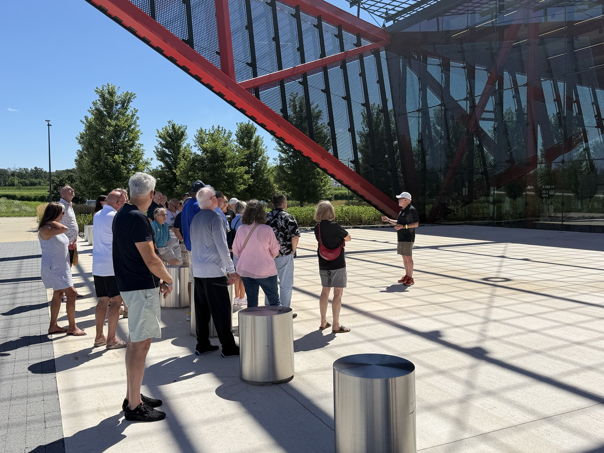
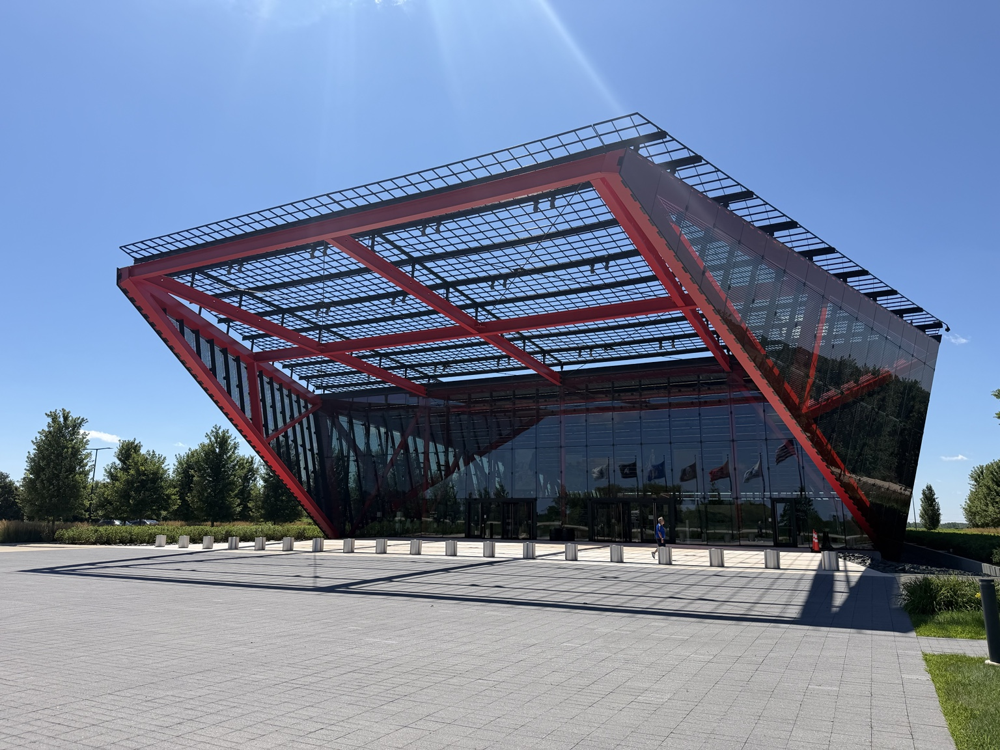
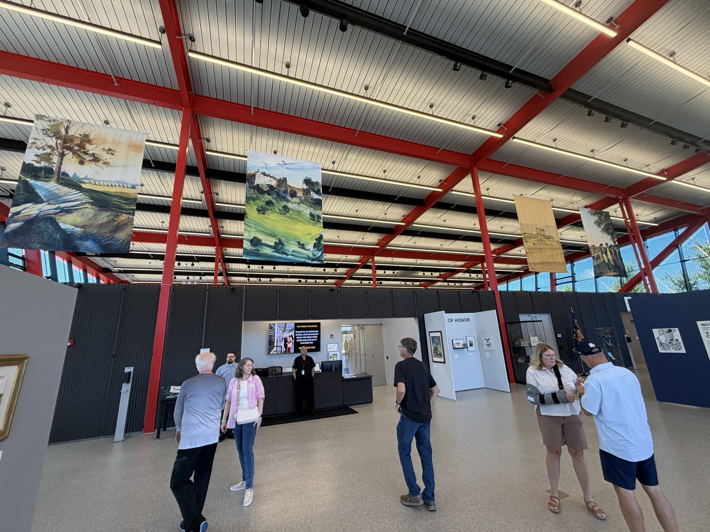
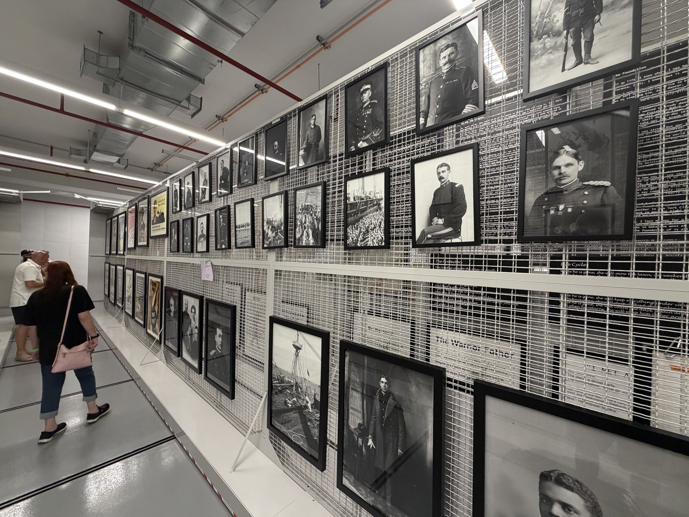
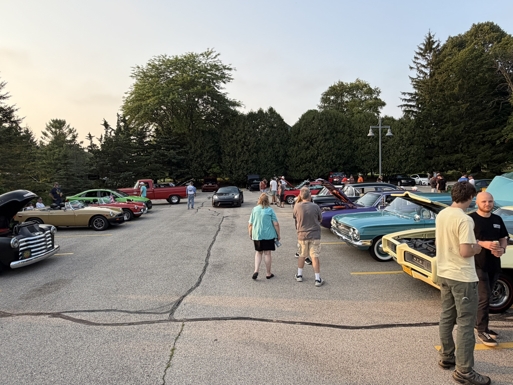
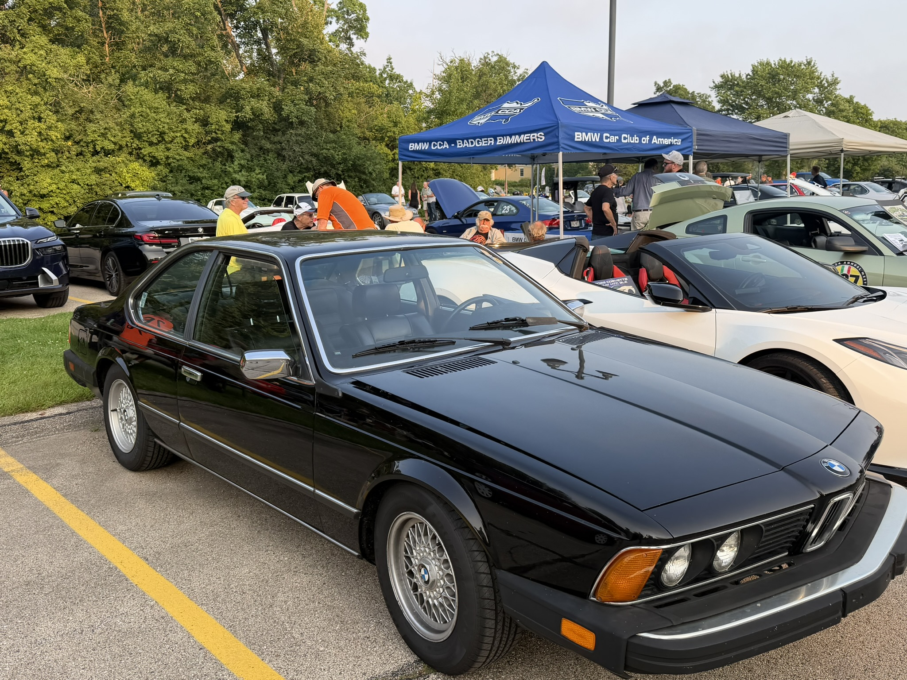
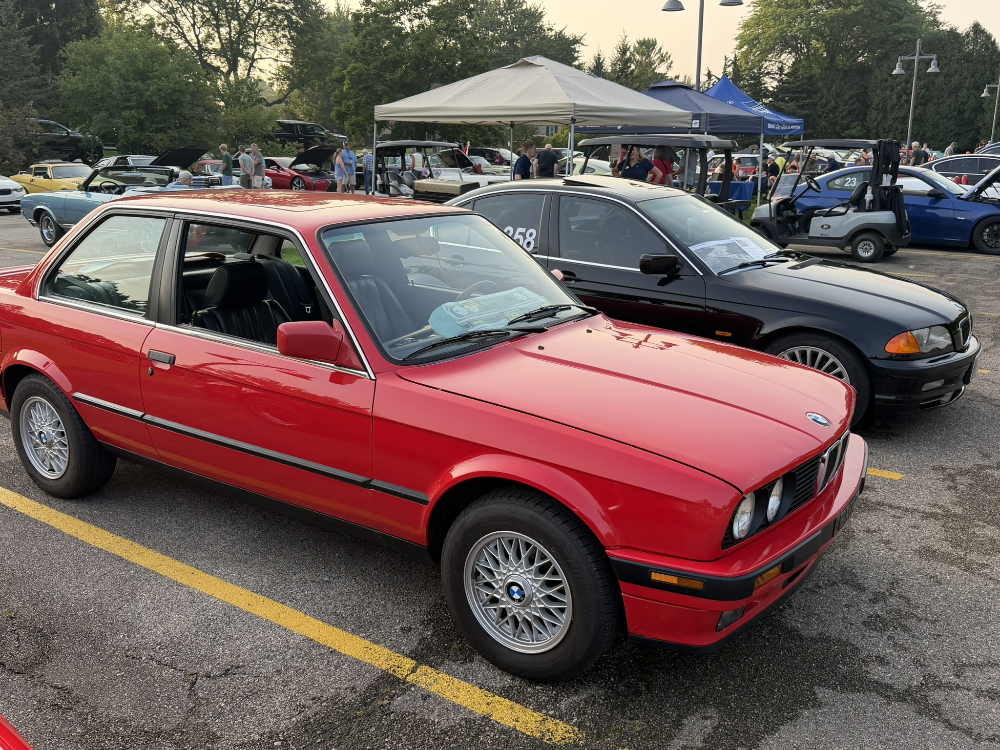
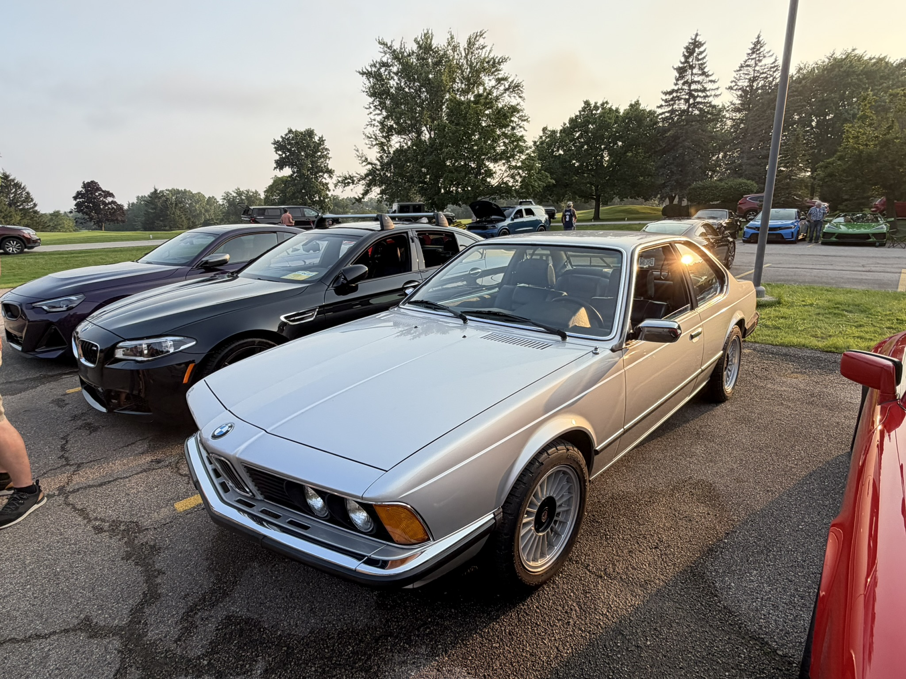
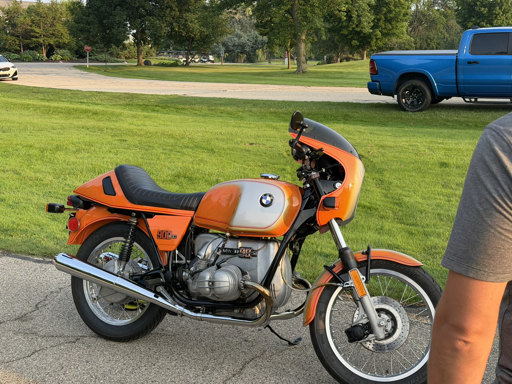
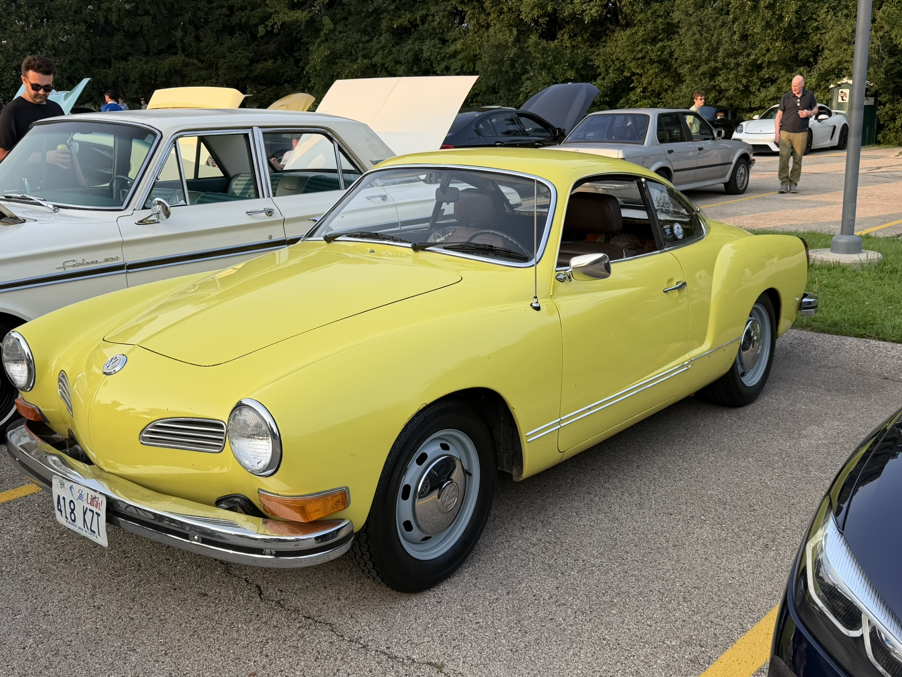

The first Dispatch is about why The Depot exists, the community already surrounding it, and a few of the people, cars and places that make this hobby worth building around.
August 2026Butler, WisconsinThe Depot Motorworks
01 · Welcome
The Depot is starting with the people, not the building.
The Depot Motorworks is taking shape as an enthusiast-focused shop in Butler, but the larger idea has always been more than service bays. It is about creating a place where good automotive work and the community around the cars can exist together.
That means documenting the build, showing up at local events, meeting the people already doing interesting things and sharing the stories along the way. The Depot Dispatch is where those pieces come together.
02 · The Community Already Exists
We do not have to invent an enthusiast community. We just have to participate in it.
One of the clearest lessons from the last few months is that Greater Milwaukee already has an active, welcoming network of owners, clubs, shops and events. The opportunity for The Depot is not to stand apart from that—it is to become another useful part of it.
That is why you will see The Depot at club nights, drives, cars and coffee events and destinations that give people a reason to get the cars out and spend time together.
03 · A Porsche Outing to Pritzker
A good car event does not have to be about standing in a parking lot.
A recent Porsche outing to the Pritzker Military Museum & Library was a great example. The cars brought everyone together, but the destination gave the day another layer—history, conversation and something worth experiencing together.
A Porsche gathering with a destination: the Pritzker Military Museum & Library.

The people are the point. Cars are what get everyone through the door.

The destination added history and context to a day built around the cars.

Inside Pritzker, the outing became about more than what was parked outside.

Interesting places make better reasons to drive.
04 · BMW + MINI Night in Mequon
Badger Bimmers brought BMW night to Brew City Cruise Night.
BMW + MINI Night was another reminder of how broad the local enthusiast scene really is. Badger Bimmers had a strong presence, but the evening was not limited to one badge or one generation. That mix is exactly what makes these nights interesting.
Thanks to Brew City Cruise Night for hosting the Mequon cruise-night series, and to Badger Bimmers, Wisconsin’s BMW Car Club of America chapter, for bringing the BMW community out for the night. Follow both for future events and more ways to get involved.

BMW + MINI Night brought a full evening of cars and conversation to Mequon.

Badger Bimmers and BMW CCA gave the night its club connection.

A red E30 representing one of the enduring BMW generations.

A silver E24 under the evening light.

The BMW connection extended beyond four wheels with an R90S.

A yellow Karmann Ghia was a perfect reminder that the best enthusiast nights are never only about one marque.
05 · Coming Up
Two more reasons to get the cars out.
Saturday, August 22 · 8:00–11:00 a.m.
Bimmers & Beans
International BMW Milwaukee 2400 S. 108th Street West Allis, Wisconsin
Hosted by Badger Bimmers. Free and open to everyone; BMW CCA membership is not required. International BMW Milwaukee is providing coffee and donuts, and Griot’s Garage is supporting a car-care raffle.
The Depot will be there. If you see us, come over and say hello.
Saturday, August 29 · 11:00 a.m.–5:00 p.m.
Artomobilia
Carmel Arts & Design District and Midtown Carmel, Indiana
Artomobilia turns central Carmel into a large-scale celebration of collector, enthusiast and performance cars. The Depot is traveling there with the Toyota Century and will document the trip, interesting cars, people and stories.
Look for our Artomobilia coverage in the next Depot Dispatch.
06 · What Is Happening at The Depot
The idea is becoming infrastructure.
While the community side is happening in public, the shop itself is moving forward behind the scenes: service planning, equipment, facility layout, partnerships, digital systems and the practical pieces required to turn the concept into an operating business.
We will continue sharing that progress without pretending the doors are open before they are. The goal is to let people see The Depot take shape and understand what it is becoming.
07 · Join the Conversation
This is meant to be built with the community around it.
Have an interesting car, event, local business, story or idea we should know about? Tell us. The Dispatch will get better as more people become part of it.